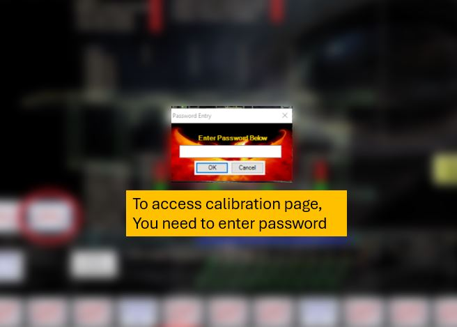
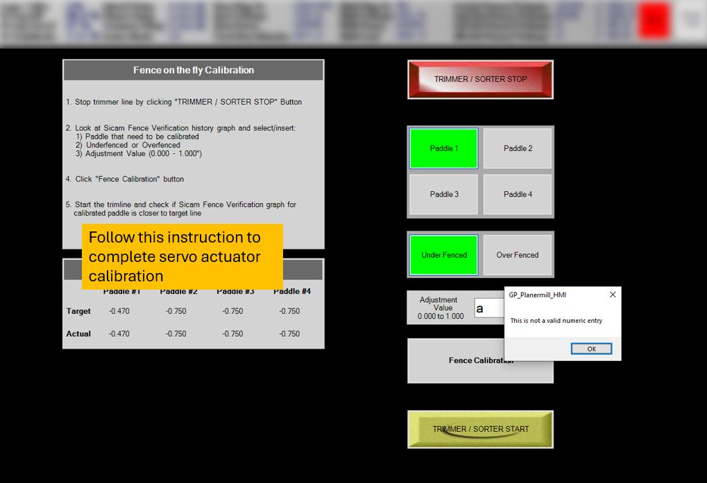
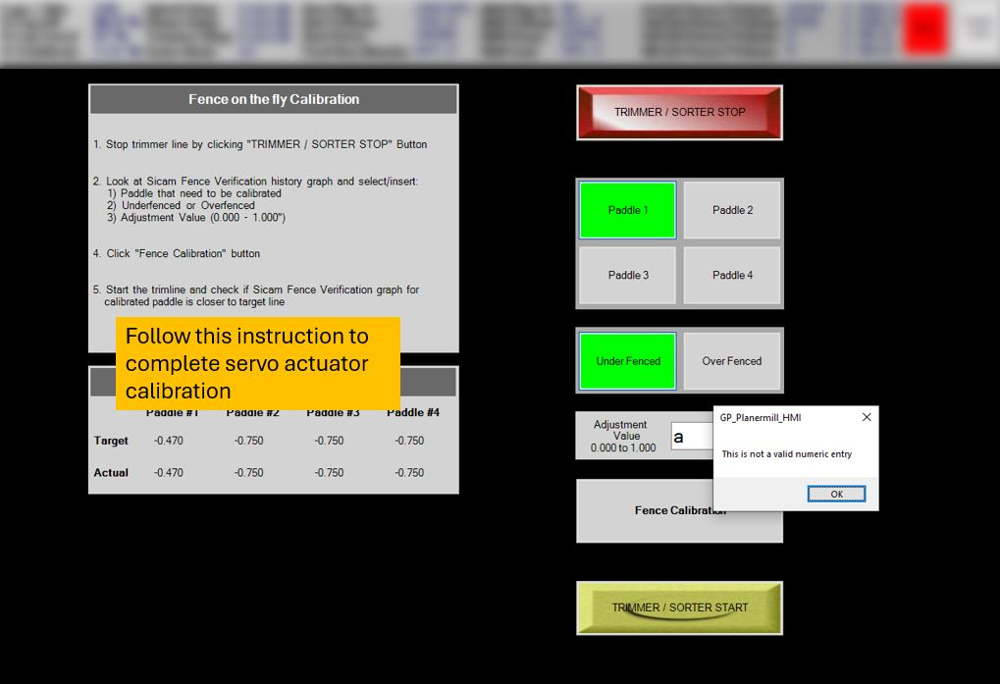

HMI - SERVO ACTUATOR CALIBRATION
Purpose
Created Servo Actuator Calibration HMI page to reduce amount of time and resources to calibrate servo actuator that is driven by servo drive
Completed tasks by Dayel Kim
1. PLC coding calibration tool page using Studio 5000
2. Create HMI Page with Visual Studio [VB.NET]
3. Establish communication between HMI and PLC
4. Test and write operation manual
HMI Operation
 
